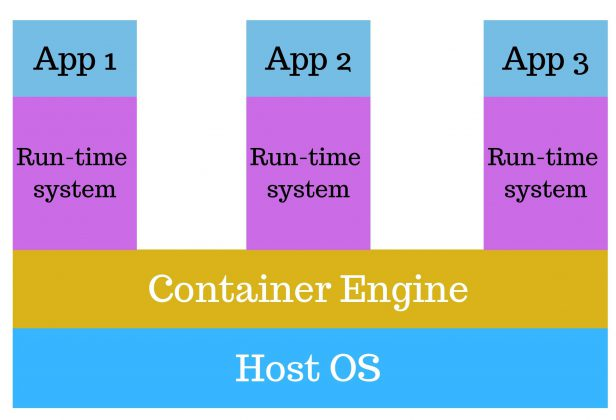

What is Containerization?
Containerization is a strategy of bringing Virtualization to the OS-level. Though Virtualization is an
abstraction to the hardware, containerization brings abstraction of OS. Containerization is more
efficient because there is no guest OS to utilize a host’s OS and do not have to share relevant
libraries and resources, unlike virtual machines. Containers works on bare-metal systems, cloud
instances, and virtual machines, across Linux, Windows, and Mac. Containerization is a lightweight
alternative to full machine virtualization that involves encapsulating an application in a container
with its OS. Containerization boots up in a fraction of seconds; this is because Container shares host
OS and holds only those application which is related to binaries and libraries.
There are noticeable differences between these two terms, which are as follows:
1. The advantage of multiple copies: one of the major points that differentiate these two processes is
containers’ temporary behavior. Many copies of a container can exist at the same time in a system like
orchestration. If any containers failed, one can remove that and replace it, and there will be no
change or impact on service. Older versions can exist at the same time with the new versions. Removal
and replacement of the new versions can be done easily if any operation gets failed.
2. Scaling related workloads: There is a vast difference between the scalability of a containerized
workload and a virtual workload. The containers contain only those services which are basic in nature
and which their functions require, but among those services, one can be a web server like Nginx and
virtualization workload system, like cabernets, having the capability of judging that when there is a
need of scaling out the number of containers based on the sequence of traffic follows and can copy the
images of the container on its own and also remove them from the system.
3. Foundation for running an application: the Linux containers format is the foundation for
containerization format. So, containerization can only run the Linux application as it will support
only the Linux environment.
4. Using microservices architecture: Google firstly uses the architecture “microservices” and then by
Netflix. One can operate these systems without excluding any single application. In the form of
functions, they perform small workloads that may be contacted through API, and they perform different
functions. These functions can be seen in traditional applications, although many applications can
perform the same functions on repeat.
Containerization vs Virtualization: Which one is better!
The assurance of which is better in Containers versus Virtual Machines (VMs) relies upon your
objective. However, virtualization empowers remaining tasks at hand to keep running in situations that
are isolated from their basic equipment by a layer of reflection. This reflection enables servers to
be separated into VMs that can run distinctive working frameworks.
Container innovation offers an elective strategy for Virtualization, in which a solitary working
framework on a host can run a wide range of users from the cloud. One approach to consider Containers
versus VMs is that while VMs run a few distinctive working frameworks on one process hub, while
containers offer the chance to virtualize the working framework itself.
Conclusion:
Containerization and Virtualization differ in many ways, but the primary difference is that containers
provide a way to virtualize an OS to run multiple workloads in a single OS instance. With VMs, the
hardware is virtualized to run multiple OS instances. The speed, agility, and portability of the
container make it another tool to streamline software development.
The way forward for your organization will depend on everything from the size of your operations and
workflows to your IT culture and skill sets. And, containerization and virtualization technologies are
coming together in some interesting new ways that could influence your decision making.
Ultimately, virtualization and containerization may both have a place in your IT strategy. Consider your
ultimate goals, immediate use cases, and team skillset before setting down a specific path. At Burwood
Group, we recently leveraged containerization to run our own client-facing managed services portal: read
about the project scope and outcomes here.

In the above diagram, as you see, there is one host OS shared by all containers.
Containers only contain applications specific to libraries that are isolated from other containers
leading to no wastage of resources. This makes the container deployments faster and more
reliable.
Containerization or virtualization: What’s the right path for you?
Virtualization enables you to run multiple operating systems on the hardware of a single physical
server, while containerization enables you to deploy multiple applications using the same
operating system on a single virtual machine or server.
Virtual machines are great for supporting applications that require an operating system’s full
functionality when you want to deploy multiple applications on a server, or when you have a wide
variety of operating systems to manage. Containers are a better choice when your biggest priority
is to minimize the number of servers you’re using for multiple applications.
Your use case matters too. Containers are an excellent choice for tasks with a much shorter
lifecycle. With their fast set up time, they are suitable for tasks that may only take a few
hours. Virtual machines have a longer lifecycle than containers, and are best used for longer
periods of time.